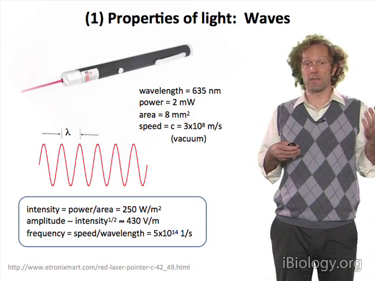
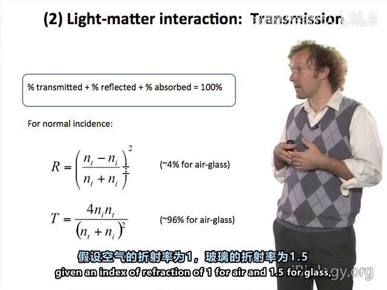
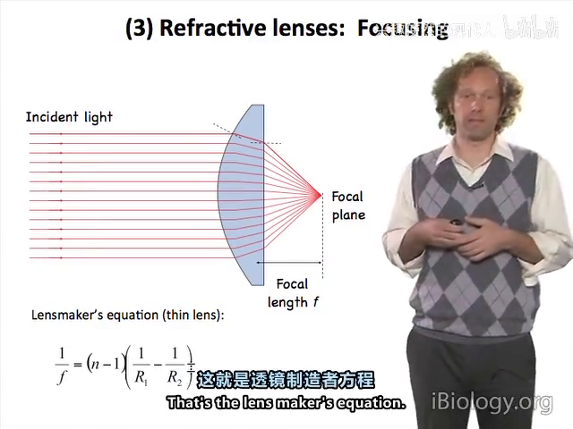
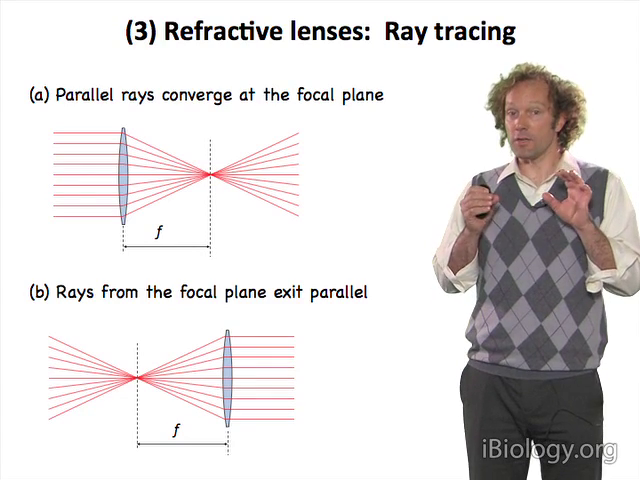
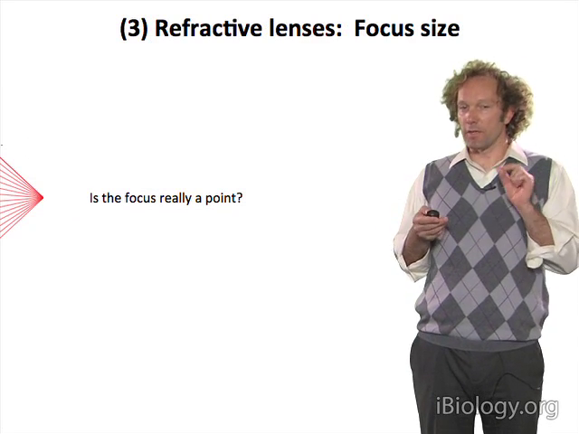
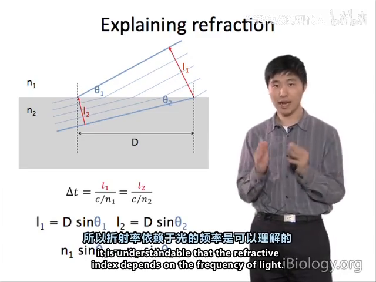

01 光与折射：一切从一条弯折的波前开始
原片：P4 Refractive Lenses and Image Formation · P11 Photons: What Is Light?iBiology 官方页，含讲稿与时间轴；国内可直接看下方 B站 镜像
一句话：显微镜做的事，是用折射把从一个点发出的球面波，重新会聚成另一个点；能会聚到多细，取决于波长和透镜收光的张角。
1.1 先给光定几个量
讲者（Daniel Fletcher，UC Berkeley）用一支 2 mW、635 nm 的红激光笔开场，把"光"拆成可以算的数：
- 波长 λ、振幅、频率、速度、相位，外加偏振（电场振荡的方向）——六个量描述一束波。
- 强度 = 功率 / 面积：2 mW 落在一个小光斑上约 250 W/m²，对应的电场约 430 V/m。
- 强度 ∝ 振幅²：这条后面在衍射、干涉里反复用到。

1.2 折射：速度变了，方向就变了
光从空气进玻璃，频率不变、速度变慢、波长按同比例缩短，于是波前偏折：
- 折射率 n = c / v（真空光速 / 介质中光速），玻璃 n≈1.5，水 1.33，油 1.515。
- 斯涅尔定律 n₁sinθ₁ = n₂sinθ₂，讲者是从"波前两侧到达同一时刻"几何推出来的，不是背公式。
- 垂直入射也有损失：空气/玻璃界面约 4% 被反射——这就是为什么荧光成像里镜片越少越好。

1.3 透镜：把两次弯折变成一次会聚
把两面球面拼起来，光在第一个面被折、在第二个面再折，就成了透镜。讲者现场用"逐面套用折射定律"的方式算出焦距，并给出三个必须记住的关系：
- 透镜制造公式：由两面曲率半径 + 折射率决定焦距；
- 薄透镜公式 1/f = 1/d_o + 1/d_i；
- 放大率 M = −d_i/d_o（负号表示倒像）。
物距大于 f 得实像；小于 f 得虚像——放大镜和目镜用的就是虚像。

1.4 三条作图光线（考试常考，实操常忘）
只要会画三条线，任何薄透镜成像都能推出来：
- 平行主光轴入射 → 过焦点出射；
- 过焦点入射 → 平行主光轴出射；
- 过透镜中心 → 不偏折。

1.5 焦点不是一个点
这是整门课的第一个"反转"：几何光学说平行光会聚于一点，但波动光学说那是一个艾里斑——中央亮斑加一圈圈暗环。原因下一章展开，这里先记住结论：
任何"点"在显微镜里都不是点，而是一个有大小、有形状的光斑（PSF）。分辨率的天花板就埋在这里。

1.6 折射率依赖频率 → 色散
斯涅尔定律还能用"波前到达时间"推出来：两侧同一时刻到达，要求 D·sinθ 与光速匹配，于是 Δt = l₁/(c/n₁) = l₂/(c/n₂) 直接给出 n₁sinθ₁ = n₂sinθ₂。
因为 n 随频率变，蓝光折得比红光狠 → 不同颜色的焦点不在同一位置。棱镜分光、彩虹、以及物镜里那堆玻璃片，都是同一件事的不同后果——这就是复消色差物镜贵的原因。

本章自测
- 一束 488 nm 的光从空气（n=1）进入玻璃（n=1.5），频率、速度、波长各变成多少？
- 薄透镜 f=10 mm，物在 15 mm 处，像距和放大率是多少？像是实是虚？
- 为什么"把图像放大"不等于"看得更细"？用本章的哪个结论可以一句话说清？
回看：P4（36:48）、P11（23:40）。完整影片见 课程地图。